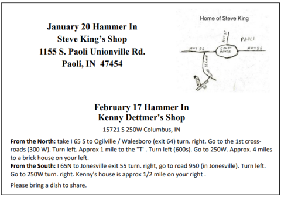

Indiana Blacksmithing
Association, Inc.
An Affiliate of the
Artist-Blacksmith's
Association of North America, Inc. (ABANA)
Next Events:

Check us out on Facebook at "Indiana Blacksmithing Association (IBA)"
Current Newsletter
9:30 AM is the regular meeting time for IBA Hammer-Ins with beginner training available at 9:00 AM unless otherwise noted. PLEASE MAKE SURE TO ASK FOR HELP!
CALENDAR OF EVENTS
For those of us who enjoyed the Forged in Fire shows during the last two years, History Channel is now airing season #3 episodes on Tuesdays at 9E/8C o'clock.
NEXT EPISODE.
The IBA has created a Facebook group designed to encourage INFORMAL COMMUNICATION among our members and among all people interested in blacksmithing.The Facebook group name is "Indiana Blacksmithing Association (IBA)". Please feel free to "Join" the group on Facebook. It is a public group so anyone can join and post to it. In your posts, please be respectful of others. Please feel free to post photographs or create photo albums that relate to the mission of the IBA. FORMAL COMMUNICATION about the activities of the IBA and our newsletters can still be found at this web site.
Here is a little retrospective of our 2013 conference.
For the Curious Blacksmith:
A recent newspaper article about Tom Latane', one of our featured demonstrators in the 2014 IBA Annual Conference. Pepin, Wis., blacksmith achieves excellence in ironclad art. Our second featured demonstrator was Alan Kress.
South Bend Tribune article about IBA 2013 Rookie Blacksmith of the Year Jamie DePriest
At the 2013 IBA Conference in Tipton, IN, the Brotherhood of Friendly Hammermen forged a large split cross. View the video made by David Hammer.
Jim Claar's new power hammer.
Interesting video about Japanese smithing: Eric Chevallier: The Blacksmith`s Apprentice by Adam Marelli.
Interesting video about modern chain making: How it`s Made: Chains.
Disclaimer on the use of the information
contained in this website.
For questions, concerns or additions to our web-site, please
contact our webmaster, Dominick Andrisani: